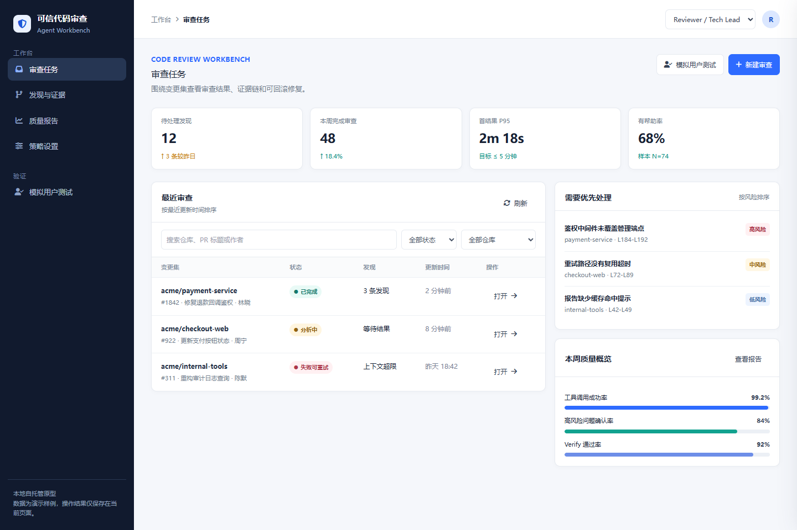
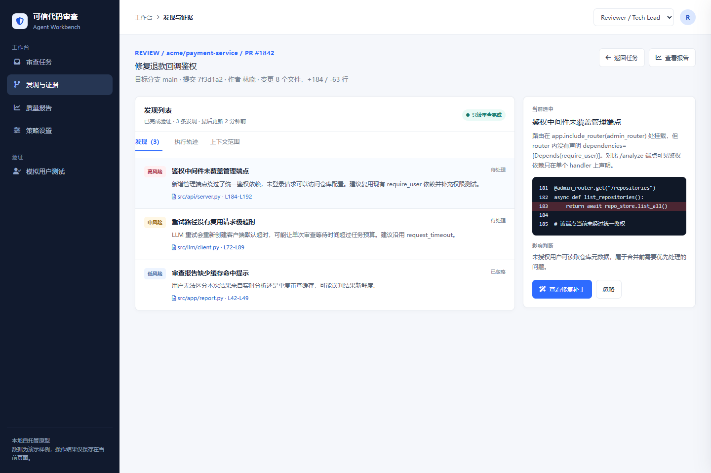
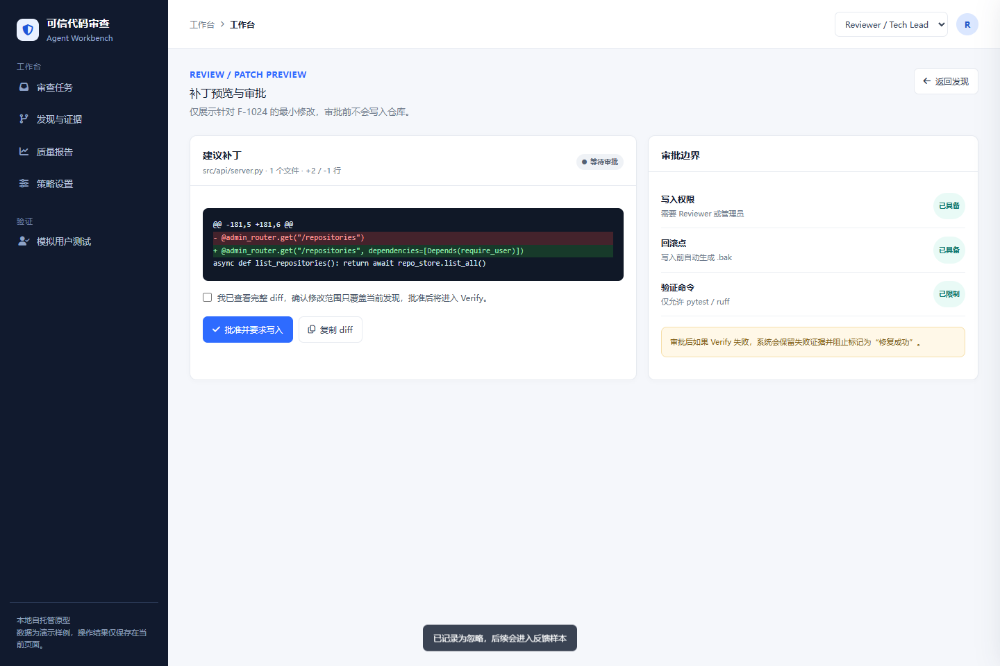
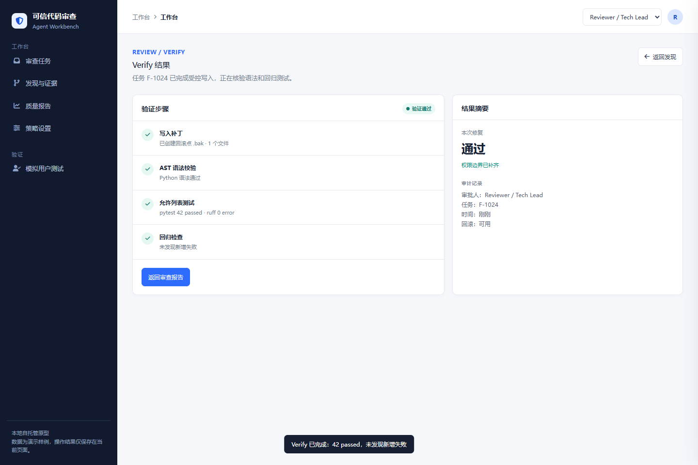
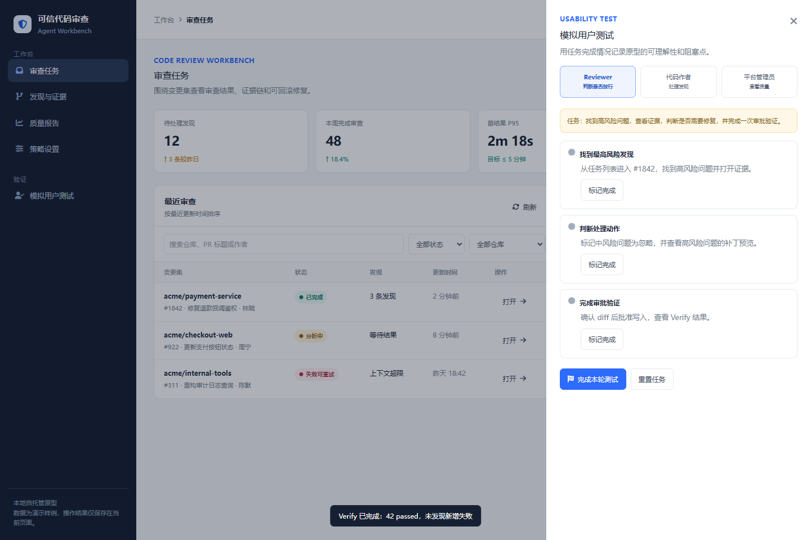

PRODUCT VALIDATION / USABILITY TEST
可信代码审查 Agent 可用性测试报告
测试版本：可信代码审查Agent-prototype.html · 测试日期：2026-10-08 · 浏览器视口：1440 × 960
测试性质：本报告是基于可点击原型的角色模拟测试，不等同于真实外部用户访谈或线上试点。它用于提前发现交互阻塞点，下一步仍需要邀请真实研发人员完成同一组任务。
一、测试目标
模拟角色
3
Reviewer、代码作者、平台管理员
任务完成
9 / 9
每个角色 3 项任务
关键链路
1
发现 → 反馈 → 审批 → Verify
测试记录
14
页面操作与状态事件
二、测试任务与结果
| 角色 | 任务 | 完成标准 | 结果 | 观察 |
|---|---|---|---|---|
| Reviewer / Tech Lead | 找到最高风险发现 | 从任务列表进入 PR #1842，打开高风险证据 | 完成 | 任务状态、风险等级和打开入口易于识别。 |
| Reviewer / Tech Lead | 判断处理动作 | 查看证据，忽略中风险问题，打开补丁预览 | 完成 | 证据卡支持决策，但“忽略”和“误报”需要拆分。 |
| Reviewer / Tech Lead | 完成审批验证 | 勾选已查看 diff，批准写入，查看 Verify 结果 | 完成 | 审批确认门槛清晰，Verify 结果能说明是否可继续。 |
| 代码作者 | 理解问题位置 | 确认文件、行号、问题描述和影响 | 完成 | 位置和证据集中在同一页面，减少跳转。 |
| 代码作者 | 查看修复建议 | 进入补丁预览，检查修改范围 | 完成 | diff 对比直观，但应增加“为什么这样修”的简短解释。 |
| 代码作者 | 反馈结果 | 对中风险问题给出忽略或误报反馈 | 完成 | 反馈动作存在，反馈原因和后续影响还需明确。 |
| 平台管理员 | 检查任务健康度 | 查看质量报告中的成功率、延迟和失败原因 | 完成 | 报告能看趋势，但失败样本还不能直接下钻。 |
| 平台管理员 | 判断风险边界 | 确认高风险发现默认不直接阻塞合并 | 完成 | 只读和审批边界在工作台中表达清楚。 |
| 平台管理员 | 定位治理缺口 | 查看审批、命令白名单和企业治理状态 | 完成 | 策略设置能暴露规划项，但缺少责任人和截止时间。 |
三、自动化操作时延
以下是浏览器自动化从动作触发到页面状态可见的耗时，不代表真实用户完成任务所需时间。
| 动作 | 耗时 | 解释 |
|---|---|---|
| 从任务列表进入审查 | 52 ms | 页面状态切换，无后端请求。 |
| 找到高风险问题并查看证据 | 20 ms | 发现卡和证据面板同屏展示。 |
| 查看 diff 并提交审批 | 49 ms | 审批按钮依赖确认勾选，状态切换成功。 |
四、问题清单与改进建议
| 优先级 | 问题 | 影响 | 建议 |
|---|---|---|---|
| P0 | 当前测试是模拟角色，缺少真实研发用户证据 | 无法证明真实用户是否理解风险等级和审批边界 | 招募 5～8 名代码作者、Reviewer 和平台人员完成同样任务，记录任务成功率、完成时长和误操作。 |
| P1 | “忽略”同时承接误报和暂不处理 | 反馈数据会污染后续评测集，无法区分模型问题和优先级选择 | 拆成“误报”“暂不处理”“已修复”，并要求误报填写原因。 |
| P1 | 质量报告缺少失败样本下钻 | 管理员看到指标异常后仍需人工查日志 | 点击失败率或延迟指标，直接进入任务列表并按 failure_category、角色和模型筛选。 |
| P1 | 补丁解释不足 | 作者能看到改了什么，但不一定理解为什么改 | 在 diff 上方增加“问题证据 → 修改原因 → 预期验证”的三段式说明。 |
| P2 | 策略规划项没有责任人和交付时间 | 治理缺口只能被看到，不能被推进 | 补充 owner、状态、目标版本和阻塞依赖，形成产品化 backlog。 |
五、截图证据





六、下一轮真实用户测试方案
- 招募 5～8 名参与者：3 名代码作者、2 名 Reviewer / Tech Lead、1～2 名平台或安全人员。
- 每人完成 3 个任务：找到高风险问题、判断补丁是否可信、完成反馈或审批。
- 主要指标：任务成功率、完成时间、错误点击次数、主动询问次数、信心评分。
- 护栏指标：未经查看 diff 就点击审批、无法找到失败原因、把“忽略”理解成“误报”的比例。
- 测试后把每条观察转成“保留、修改、降级、删除”决策，并更新 PRD 的功能说明与验收用例。
关联原型：../原型/可信代码审查Agent-prototype.html · 自动化记录：可信代码审查Agent-usability-run.json